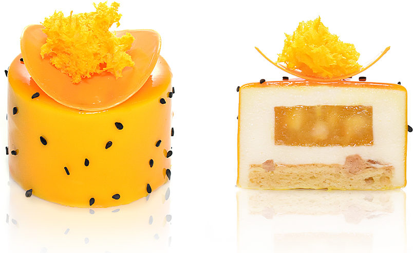
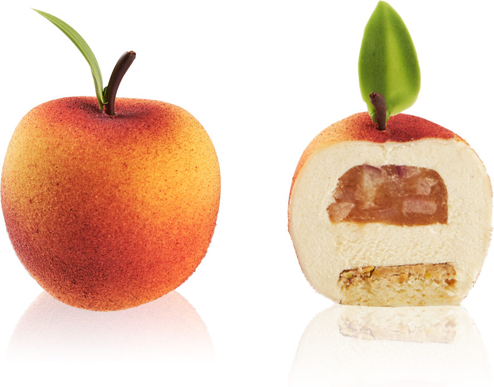
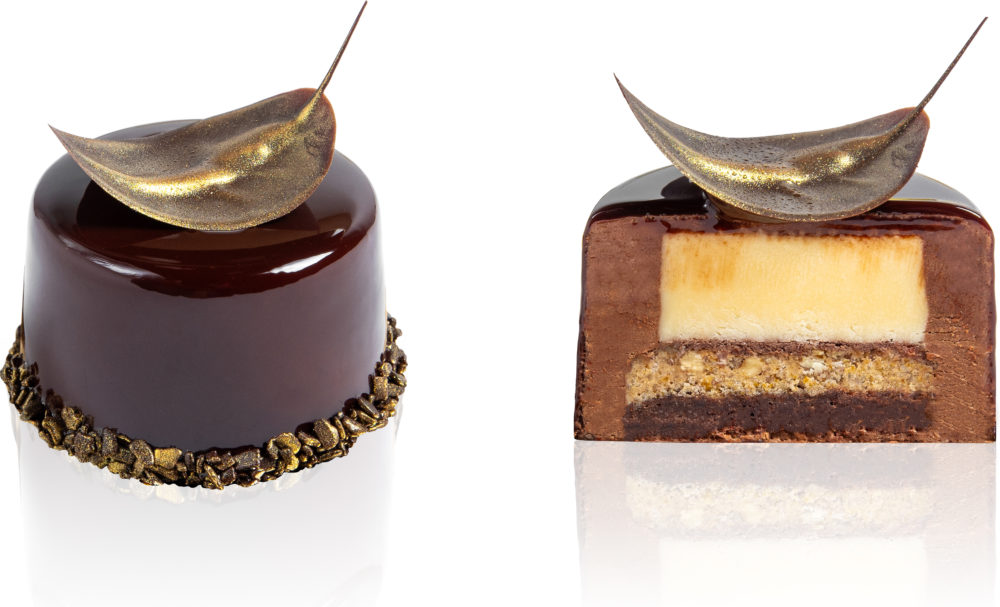
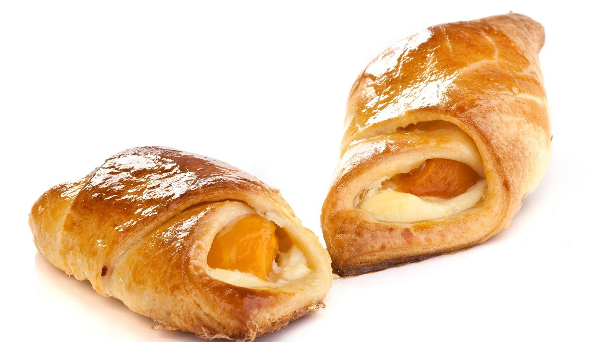
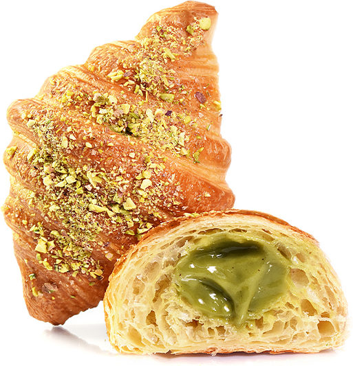
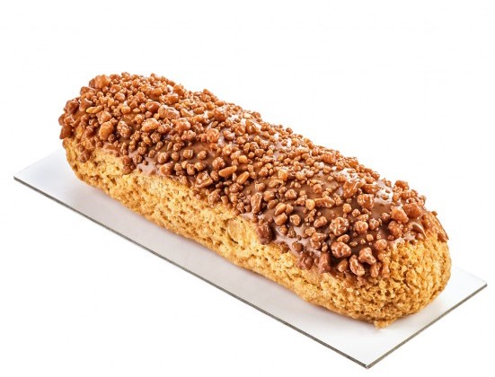
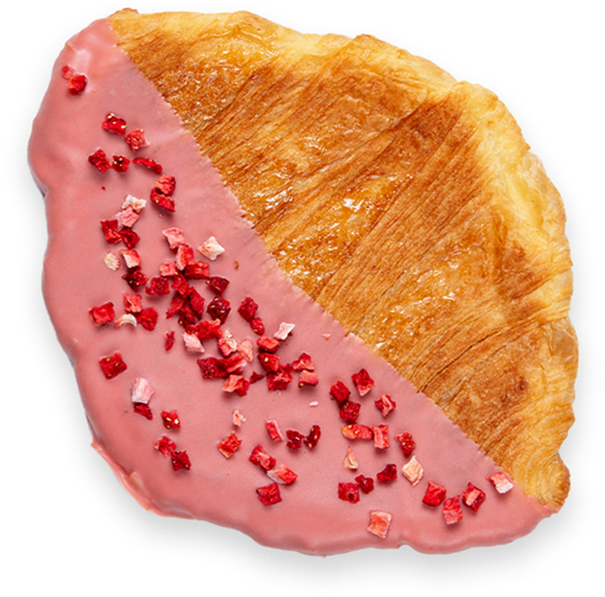

| |
Pavadinimas |
Sudėtis |
Kaina, € (1 vnt.) |
|  |
"Tropikų džiaugsmas" |
Parmezano sūrio biskvitas, „Philadelphia“ sūrio putėsiai, mangų, pasiflorų ir vanilės compote, baltojo šokolado veidrodinė glazūra, baltojo šokolado dekoras, juodieji zenamai |
5.00 |
|  |
"Persikų Rapsodija" |
Migdolų miltų biskvitas, baltojo šokolado, migdolų ir pistacijų traškutis, persikų džemas su persikų gabaliukais, egzotiški baltojo šokolado, persikų ir pasiflorų putėsiai |
5.50 |
|  |
"Mūzos Paslaptis" |
Bemiltis šokoladinis biskvitas, traškus karijų riešutų sluoksnis, vanilinis angliškas kremas, juodojo šokolado putėsiai, vanilės ir baltojo šokolado puta |
4.00 |
|  |
Bandelė su persikais |
Sluoksniuota tešla, persiko puselė |
2.00 |
|  |
"Paryžiaus rytas" |
Prancūziškas ragelis įdarytas pistacijų riešutų kremu |
4.00 |
 |
Klasikinis ekleras |
Trapios ir plikytos tešlos ekleras su maskarponės kremu, aplietas šokoladu |
3.00 |
|  |
Sūrios karamelės ekleras |
Trapios ir plikytos tešlos ekleras su sūrios karamelės kremu. |
3.50 |
|  |
„Flat Croissan" |
Su braškiniu šokoladu ir liofilizuotomis braškėmis |
3.70 |